측량및지형공간정보산업기사 (2010-03-07 기출문제)
1과목: 응용측량
1. 노선의 곡률반지름 R=100m, 곡선장 L=16m일 때 클로소이드의 매개변수(Parameter) A의 값은?
- 40m
- 50m
- 60m
- 70m
(정답률: 70%)

2. 다음 중 하천측량의 종류가 아닌 것은?
- 평면측량
- 유량측량
- 변위측량
- 수준측량
(정답률: 17%)
3. 다음 중 클로소이드 곡선의 설치 방법이 아닌 것은?
- 주접선에서 직교좌표에 의한 설치법
- 현에서 직교좌표에 의한 설치법
- 현각현장에 의한 설치법
- 4분의 1법에 의한 설치법
(정답률: 70%)
4. 경관분석의 기초인자로 사용하기에 적합하지 않은 것은?
- 인간의 시ㆍ지각 특성
- 지점과 대상과의 관계
- 식생상태와 기상과의 관계
- 대상의 시각 속성
(정답률: 58%)
5. 세 변의 길이가 20m, 30m, 40m인 삼각형의 면적은 얼마인가?
- 90m2
- 180m2
- 240m2
- 290m2
(정답률: 82%)
6. 다음 완화곡선에 관한 설면 중 옳지 않은 것은?
- 완화곡선의 곡선 반지름은 시점에서 무한대, 종점에서 원곡선 R로 된다.
- 원곡선과 직선부 사이에 넣는 특수곡선이다.
- 모든 클로소이드는 닮은꼴이며 클로소이드 요소에는 길이의 단위를 가진 것과 단위가 없는 것이 있다.
- 완화곡선은 어느 부분이나 곡률이 일정하다.
(정답률: 50%)
7. 지중레이다(Ground Penetration Radar : GPR) 탐사기법은 전자파의 어떤 성질을 이용 하는가?
- 방사
- 반사
- 흡수
- 산란
(정답률: 70%)
8. 그림과 같은 삼각형의 토지 ABC의 면적을 1:2로 분할하려고 한다. AD의 길이는 얼마인가? (여기서, AC의 거리는 30m임)
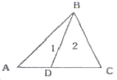
- 7.5m
- 10
- 15m
- 22.5m
(정답률: 60%)
9. 도로 또는 철도의 설치 시 차량의 탈선을 방지하기 위하여 곡선의 안쪽과 바깥쪽의 높이차를 두게 되는데 이것을 무엇이라 하는가?
- 확폭
- 슬랙
- 캔트
- 슬라브
(정답률: 64%)
10. 터널측량에서 터널을 관통하기 위해 두 점간의 트래버스 측량을 하여 위거는 50.4m, 경거는 81.2m의 결과를 얻었다. 이 때 두 점간의 거리는 얼마인가?
- 65.57m
- 77.57m
- 95.57m
- 87.57m
(정답률: 알수없음)
11. 그림에서 A점의 표고가 50m라면 B점의 표고는?
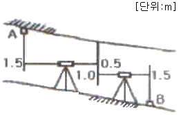
- 46.5m
- 47.5m
- 49.0m
- 49.5m
(정답률: 31%)
12. 다음 그림과 같은 흙의 토량은 얼마인가? (단, 각주공식을 사용)
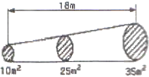
- 4⑤m3
- 420m3
- 435m3
- 450m3
(정답률: 70%)
13. 그림과 같은 도로의 2차 포물선 종단곡선에서 가장 낮은 점(Lowest Point)의 계획고(Design Elevation)는 얼마인가? (단, 종단곡선의 거리는 60m이고, A점의 계획고는 46.80m이다.)
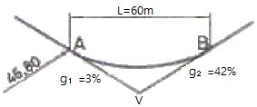
- 45.26m
- 45.90m
- 46.26m
- 46.90m
(정답률: 42%)
14. 노선측량의 횡단면도상에 나타내어야 할 사항은?
- 절토 및 성토면적
- 곡선길이
- 접선장
- 편각
(정답률: 46%)
15. 그림에 있어서 댐 저수면의 높이를 100m로 할 경우 그 저수량은 얼마인가? (단, 80m 바닥은 평평한 것으로 가정한다.)
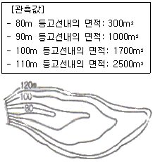
- 16,000m3
- 20,000m3
- 30,000m3
- 34,000m3
(정답률: 47%)
16. 하천의 양수표를 설치하는 장소로 적당하지 않은 곳은?
- 양수표의 설치 위치 뿐만 아니라 그 상류, 하류의 상당한 범위의 하상이나 하안이 안정한 곳
- 본류와 지류가 합류하는 지점의 중앙인 곳
- 홍수시 유실, 이동, 파손되지 않은 곳
- 평시, 홍수시를 막론하고 언제나 쉽게 양수표를 읽을 수 있는 곳
(정답률: 알수없음)
17. 하천에서 부자를 이용하여 유속을 측정하고자 할 때 유하거리는 보통 얼마 정도를 하는가?
- 100~200m
- 500~1,000m
- 1~2km
- 하폭의 5배 이상
(정답률: 73%)
18. 원곡선 설치에 있어서 접선장(T.L)을 구하는 공식은? (단, R은 곡선 반지름, I는 교각)
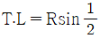
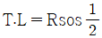
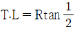
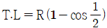
(정답률: 알수없음)
19. 하천이나 항만 등에서 수심측량을 하여 지형을 나타내고자 할 때 가장 알맞은 방법은?
- 채색법
- 점고법
- 영선법
- 등고선법
(정답률: 50%)
20. 급경사가 되어 있는 터널 내의 트래버스 측량에 있어서 정밀한 측각을 하려면 어느 측각방법이 좋은가?
- 방위각법
- 배각법
- 편각법
- 단각법
(정답률: 알수없음)
2과목: 사진측량 및 원격탐사
21. 사진 판독의 요소가 아닌 것은?
- 크기와 형태
- 음영과 색조
- 질감과 모양
- 날씨와 고도
(정답률: 70%)
22. 카메라의 경사, 지표면의 비고를 수정하고 등고선이 삽입된 사진지도는?
- 중심투영 사진지도
- 정사투영 사진지도
- 조정집성 사진지도
- 약집성 사진지도
(정답률: 50%)
23. 센서를 크게 수동방식과 능동방식의 센서로 분류할 때 능동방식 센서에 속하는 것은?
- TV 카메라
- 광학스캐너
- 레이다
- 파이크로파 복사계
(정답률: 55%)
24. 사진측량에서 말하는 모델(model)의 정의로 옳은 것은?
- 한 쌍의 중복된 사진으로 입체시 되는 부분이다.
- 어느 지역을 대표할 만한 사진이다.
- 촬영된 한 장의 사진이다.
- 편위수정된 사진이다.
(정답률: 73%)
25. 사진크기 23cm×23cm인 항공사진에서 주점기선장이 10.5cm라면 인전사진과의 중복도는 얼마인가?
- 46%
- 50%
- 54%
- 60%
(정답률: 65%)
26. 사진크기 23cm×23cm, 축척 1:10,000, 종중복도 60%로 초점거리 210mm인 사진기에 의해 평탄한 지형을 촬영하였다. 이 사진의 기선고도비(B/H)는 얼마인가?
- 0.22
- 0.33
- 0.44
- 0.55
(정답률: 알수없음)
27. 지도를 그리거나 생산해 내는 전산기 체계, 도면 자동화를 의미하는 용어는?
- AM(Automated Mapping) System
- FM(Facilities Management) System
- AML(Arc Macro Language) System
- DML(Date Management Language) System
(정답률: 60%)
28. 일반적 원격탐사 영상의 해상도 중에 영상의 최소단위인 화소가 지상의 거리를 어느 정도 표현하는가를 아타내는 것을 무엇이라 하는가?
- 분광해상도(Spectral Resolution)
- 방사해상도(Radiometric Resolution)
- 공간해상도(Spatial Resolution)
- 주기해상도(Temporal Resolution)
(정답률: 25%)
29. 항공사진측량 촬영용 항공기에 요구되는 조건으로 옳지 않은 것은?
- 안정성이 좋을 것
- 상승 속도가 클 것
- 이착륙 거리가 길 것
- 적재량이 많고 공간이 넓을 것
(정답률: 70%)
30. 항공사진의 기복변위에 대한 설명으로 옳지 않은 것은?
- 촬영고도에 비례한다.
- 표고차가 있는 물체에 대한 사진 중심으로부터의 방사상 변위를 말한다.
- 지형지물의 높이에 비례한다.
- 연직점으로부터 상점까지의 거리에 비례한다.
(정답률: 알수없음)
31. 항공삼각측량에 있어서 상좌표로부터 절대좌표를 얻기 위한 오차조정방법에 의한 분류가 아닌 것은?
- 해석적 방법
- 독립모형법
- 기계법
- 도해법
(정답률: 50%)
32. 도화를 행하기 위하여 사용한 밀착양화 필름의 지표간 거리를 관측하였더니 횡=221.39mm, 종=220.16mm 이었다. 이 사진을 찍는 사진기는 지표간 거리가 224.8mm, 초점거리 200mm 이었다면 도화기의 초점거리는 얼마로 하면 좋은가?
- 194.4mm
- 196.4mm
- 201.6mm
- 203.6mm
(정답률: 58%)
33. 다음 중 GIS의 주요 기능이 아닌 것은?
- 자료 입력
- 자료 관리
- 자료 압축
- 자료 분석
(정답률: 알수없음)
34. 초점거리 150mm, 지상고도 3,000m의 사진기로 촬영한 수직 항공사진에서 길이 60m인 교량의 사진 상의 길이는?
- 0.2mm
- 0.3mm
- 2.0mm
- 3.0mm
(정답률: 50%)
35. 래스터(또는 그리드) 저장 기법 중 셀 값을 개별적으로 저장하는 대신 각각의 변 진행에 대하여 속성값, 위치, 길이를 한 번씩만 저장하는 방법은?
- 사지수형 기법
- 블록코드 기법
- 체인코드 기법
- Run-length 코드 기법
(정답률: 알수없음)
36. DEM(Digital Elevation Model)과 TIN(Triangulated lrregular Nefwork)의 주요 활동 분야가 아닌 것은?
- 토공량 산정
- 경사도 분석
- 가시권 분석
- 도로망 분석
(정답률: 20%)
37. 벡터(Vector) 자료구조의 특징으로 옳지 않은 것은?
- 현실 세계의 정확한 묘사가 가능하다.
- 비교적 자료구조가 간단하다.
- 압축된 데이터구조로 자료의 용량을 축소할 수 있다.
- 위상관계의 제공으로 공간적 분석이 용이하다.
(정답률: 50%)
38. 촬영고도 700m에서 촬영한 사진 상에 나타난 철탑의 상단부분이 사진의 주점으로부터 6cm 떨어져 있으며, 철탑의 변위가 5mm로 나타날 때, 이 철탑의 높이는?
- 40.0m
- 58.3m
- 61.3m
- 92.5m
(정답률: 알수없음)
39. 표정점 측량에서 선점을 위한 유의사항에 대한 설명으로 옳지 않은 것은?
- 사진 상에서 명확하게 볼 수 있는 점이어야 한다.
- 상공에서 잘 볼 수 있고 평탄한 곳의 점이 좋다.
- 헐레이션(halation)이 발생하기 쉬운 점이어야 한다.
- 시간적으로는 변화하지 않는 점이어야 한다.
(정답률: 36%)
40. 메타데이터(Metadata)에 대한 설명으로 옳지 않은 것은?
- 자료의 수집방법, 원자료, 투영법, 축척, 품질, 포맷, 관리자를 포함하는 데이터 파일에서 데이터의 설명이나 데이터에 대한 데이터를 의미한다.
- 메타데이터가 중요한 이유는 공간 데이터에 대한 목록을 체계적으로 표준화된 방식으로 제공함으로써 데이터의 공유화를 촉진시키고, 대용량의 공간 데이터를 구축하는데 드는 비용과 시간을 절감할 수 있기 때문이다.
- 현재 메타데이터의 표준으로 사용되고 있는 것은 SDTS(Spatial Data Transfer Standard)와 DIGEST(Digital Geographic Exchange STandard)를 들 수 있다.
- 메타데이터의 필요성에도 불구하고, 1990년 이후에야 메타데이터 표준화 작업이 시작되었다.
(정답률: 알수없음)
3과목: GIS 및 GPS
41. 축척 1:25,000 지형도에서 산 정상부터 산 밑까지의 지도상 거리가 5.6cm이고, 실제 지형에서는 산 정상의 표고가 335.75m, 산 밑의 표고가 102.50m일 때 사면의 경사도는?
- 1/4
- 1/5
- 1/6
- 1/7
(정답률: 34%)
42. GPS 관측기술 중 GPS 상시관측소를 활용하여 실시간으로 높은 정확도의 3차원 위치를 결정할 수 있는 측량방법은?
- 실시간 Point Positioning 측량
- 실시간 DGPS 측량
- 실시간 VRS 측량
- 실시간 RTK 측량
(정답률: 40%)
43. 1km 앞에 있는 폭 5cm인 물체의 사이에 낀 각도는 얼마인가?
- 1.03“
- 2.06“
- 10.3“
- 20.6“
(정답률: 37%)
44. 지구를 구체로 보고 지표면상을 따라 40km를 측정했을 때 평면상의 오차 보정량은? (단, 지구 평균곡률방경은 6,370km이다.)
- 6.57cm
- 13.14cm
- 23.10cm
- 33.10cm
(정답률: 37%)
45. 수준측량에 대한 설명으로 옳지 않은 것은?
- 수평면이란 그 면상의 각 점에서 중력의 방향에 수직한 면으로서 지구의 형상에 따르는 일종의 곡면이다.
- 지평면이란 어떤 한 점에서 수평면과 접하는 평면이며 보통 시준할 수 있는 거리에서는 수평면과 일치한다.
- 표고란 높이의 기준인 수평면에서 어떤 점까지의 연직거리이다.
- 수준점은 기준면으로부터 정확하게 높이를 관측하여 표시해둔 점이며 1등 수준점은 국도나 간선도로의 약 20km마다 설치되어 있다.
(정답률: 50%)
46. 그림과 같은 삼각형에서 거리를 관측한 결과 a=2,000.00m, b=1,400.000m이고, A점과 B점의 좌표가 각각(2,000m, 2,000m), (3,000m, 2,100m)일 때 C점의 좌표를 구하기 위한 삼변측량 관측방정식으로 옳은 것은?
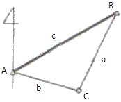
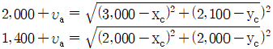
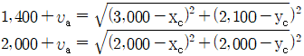
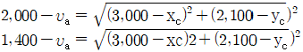
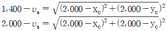
(정답률: 39%)
47. GPS 오차의 종류가 아닌 것은?
- 대기조건에 의한 오차
- 다중전파경로에 의한 오차
- 제어부분
- 신호부분
(정답률: 19%)
48. GPS측량의 체계구성을 크게 3가지로 나눌 때 해당되지 않는 것은?
- 사용자부분
- 우주부분
- 제어부분
- 신호부분
(정답률: 50%)
49. 전파거리 측량기의 거리측량 원리는 변조파장으로부터 거리를 구할 수 있다. 이 때 변조파장(λ)을 구하는 식으로 옳은 것은? (단, V : 보정된 전파 에너지 속도, f : 변조 주파수)
- f/V
- 2V/f
- V/2f
- V/f
(정답률: 59%)
50. 지오이드에 대한 설명으로 옳지 않은 것은?
- 위치에너지 E=mgh가 “0”이 되는 면이다.
- 평균해수면을 육지내부까지 연장한 면을 말한다.
- 지오이드의 법선과 타원체의 법선은 불일치하며 그 양을 연직선 편차라 한다.
- 지구타원체를 기준으로 대륙에서는 낮고 해양에서는 높다.
(정답률: 46%)
51. 그림에서 a1, a2, a3를 같은 경중률로 관측한 결과가 a1-a2-a3=24"일 때 조정량으로 옳은 것은?
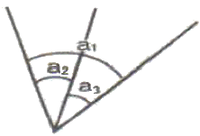
- a1=+8", a2=+8", a3=+8"
- a1=-8", a2=+8", a3=+8"
- a1=-8", a2=-8", a3=-8"
- a1=+8", a2=-8", a3=-8"
(정답률: 73%)
52. 우리나라의 축척 1:5,000 지형도에서 경사가 일정한 A, B점간의 수평거리가 300m, A점의 표고 79m, B점의 표고 67m일 때 A, B사이에 있는 주곡선 중 A에 가장 가까운 주곡선은 A로부터 도상거리 몇 cm에 있는가?
- 1.5cm
- 2.0cm
- 4.0cm
- 4.5cm
(정답률: 46%)
53. 삼변측량에 대한 설명 중 옳지 않은 것은?
- 변으로부터 각을 구하고 구한 각과 변에 의하여 수평위치를 결정한다.
- 관측값에 비하여 조건식이 많다.
- 변길이를 관측하고, cosine 제2법칙 및 반각공식을 이용하여 각을 결정한다.
- 전파거리측정기 등을 이용하여 거리관측의 정확도가 높아져 수평위치결정 정확도가 향상되었다.
(정답률: 알수없음)
54. 트랜싯으로 1회 각 관측을 할 때 생기는 우연 오차가 ±0.01m라 하면 16회 연속 각관측을 했을 때의 전체 오차는?
- ±0.04m
- ±0.08m
- ±0.16m
- ±0.32m
(정답률: 39%)
55. A점에서 B점 방향을 관측할 경우 측표가 그림과 같이 B" 점에 편심되어 있을 때 보정량(θ)은? (단, ø = 120“, e=0.1m, S=1km)
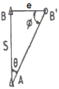
- 2“
- 9“
- 18“
- 24“
(정답률: 40%)
56. 삼각망을 구성하는 삼각형의 모양으로 가장 좋은 것은?
- 직각 삼각형
- 정 삼각형
- 예각 삼각형
- 둔각 삼각형
(정답률: 55%)
57. 어느 측선의 방위각이 41° 25 ‘ 15“일 때, 역방위각은?
- 48° 34‘ 45“
- 131° 25‘ 15“
- 138° 34‘ 45“
- 221° 25‘ 15“
(정답률: 46%)
58. 각과 거리 관측에 대한 설명으로 옳은 것은?
- 정밀기선측량의 정밀도가 1/100,000 이라는 것은 관측거리 1km에 대한 1cm의 오차를 의미한다.
- 천정각은 수평각 관측을 의미하며 고저각은 높낮이에 대한 관측각이다.
- 각관측에서 배각관측이란 정위관측과 반위관측을 의미한다.
- 각관측에서 관측방향이 15“ 틀어진 경우 2km 앞에 발생하는 위치오차는 1.5m이다.
(정답률: 55%)
59. 직사각형의 면적을 구하기 위하여 거리를 관측한 결과 가로=50.00±0.01m, 세로=100.00±0.01m 이었다면 면적에 대한 오차는?
- ±0.01m2
- ±0.02m2
- ±0.98m2
- ±1.41m2
(정답률: 31%)
60. GPS 위성의 좌표정보 결정과 관련이 없는 것은?
- 정밀력(Precise Ephemeris)
- SINEX 정보
- 위성력(almanac)
- 보통력(broadcast ephemeris)
(정답률: 50%)
4과목: 측량학
61. 측량업의 등록을 반드시 취소하여야 하는 경우에 해당되지 않는 것은?
- 영업정지기간 중에 게속하여 영업을 한 경우
- 거짓이나 그 밖의 부정한 방법으로 측량업의 등록을 한 경우
- 정당한 사유 없이 측량업의 등록을 한 날부터 1년 이내에 영업을 시작하지 아니하거나 계속하여 1년 이상 휴업한 경우
- 다른 사람에게 자기의 측량업등록증 또는 측량업등록수첩을 빌려 주거나, 자기의 성명 또는 상호를 사용하여 측량업무를 하게 한 경우
(정답률: 31%)
62. 측량업자로서 속임수, 위력, 그 밖의 방법으로 측량업과 관련된 입찰의 공정성을 해친 자에 대한 벌칙 기준은?
- 3년 이하의 징역 또는 3천만원 이하의 벌금
- 2년 이하의 징역 또는 2천만원 이하의 벌금
- 1년 이하의 징역 또는 1천만원 이하의 벌금
- 300만원 이하의 과태료
(정답률: 64%)
63. 기본측량의 성과 중 지도를 국토해양부장관의 허가 없이 국외로 반출하여서는 안되는 경우는?
- 대한민국 정부와 외국정부간에 체결된 협정 또는 합의에 의하여 상호 교환하는 경우
- 축척 5만분의 1이상의 축척으로 제작된 지도를 국외로 반출하는 경우
- 정부를 대표하여 외국 정부와 교섭하거나 국제회의 또는 국제기구에 참석하는 자가 자료로 사용하기 위하여 반출하는 경우
- 관광객의 유치와 관광시설의 선전을 목적으로 제작된 지도를 국외로 반출하는 경우
(정답률: 50%)
64. 측량ㆍ수로조사 및 지적에 관한 법률에 제정목적에 대한 설명으로 가장 적합한 것은?
- 국토개발의 중복 배제와 경비 절감에 기여함
- 측량 및 수로조사와 지적에 관한 규칙을 정함
- 측량 및 수로조사의 기준을 규정하고 절차의 경제성을 검토함
- 국토의 효율적 관리와 해상교통의 안전 및 국민의 소유권 보호에 기여함
(정답률: 60%)
65. 1:50,000 지형도에서 목표물의 취사 선택 기준으로 옳지 않은 것은?
- 원거리부터 식별이 용이한 목표물
- 특별한 형태를 이루고 있는 것
- 학술상 저명한 것
- 표시할 목표물이 다수 근거리에 있을 경우는 모든 기호 표시를 생략
(정답률: 34%)
66. 측량ㆍ수로조사 및 지적에 관한 법률상의 용어의 정의가 틀린 것은?
- 일반측량이란 기본측량 및 공공측량에서 제외된 측량을 말한다.
- 지적측량이란 토지를 지적공부에 등록하거나 지적공부에 등록된 경계점을 지상에 복원하기 위해 시행하는 측량을 말한다.
- 필지란 대통령령으로 정하는 바에 따라 구획되는 토지의 등록단위를 말한다.
- 측량기록이란 측량성과를 얻을 때까지의 측량에 관한 작업의 기록을 말한다.
(정답률: 알수없음)
67. 측량기술자의 업무정지 사유에 해당되지 않는 것은?
- 근무처 및 경력 등의 신고를 거짓으로 한 경우
- 다른 사람에게 측량기술자격증을 빌려준 경우
- 다른 사람에게 측량기술자가 자기의 성명을 사용하여 측량 업무를 수행하게 한 경우
- 측량기술자가 한정치산자에 해당하는 경우
(정답률: 50%)
68. 수로조사에서 간출지(刊出地)의 높이와 수심의 기준이 되는 기본수준면은?
- 인천만의 평균해수면
- 일정기간 조석을 관측하여 분석한 결과 평균해수면
- 일정기간 조석을 관측하여 분석한 결과 가장 낮은 해수면
- 일정기간 조석을 관측하여 분석한 결과 가장 높은 해수면
(정답률: 28%)
69. 측량기본계획에 포함되지 않는 사항은?
- 측량의 국내외 환경 분석 및 기술연구
- 측량에 관한 기본구상 및 추진 전략
- 측량기술의 향상 및 기본측량의 추진계획
- 측량 산업 및 기술인력 육성 방안
(정답률: 19%)
70. 「 측량기준점표지를 이전 또는 파손하거나 그 효용을 해치는 행위를 한 자」에 대한 벌칙은?
- 1년 이하의 징역 또는 1천만원 이하의 벌금
- 2년 이하의 징역 또는 2 만원 이하의 벌금
- 3년 이하의 징역 또는 3천만원 이하의 벌금
- 5년 이하의 징역 또는 5천만원 이하의 벌금
(정답률: 42%)
71. 기본측량성과의 고시내용에 포함되지 않는 사항은?
- 측량의 종류와 정확도
- 측량의 절차와 사용원점
- 측량의 규모 및 설치한 측량기준점의 수
- 측량성과의 보관 장소와 측량실시의 시기 및 지역
(정답률: 42%)
72. 해양의 수심ㆍ지구자기ㆍ중력ㆍ지형ㆍ지질의 측량과 해안선 및 이에 딸린 토지의 측량으로 정의 되는 것은?
- 해안측량
- 수로조사
- 해양측량
- 수로측량
(정답률: 알수없음)
73. 지도도식에서 지물의 실제형상 또는 상징물의 표현을 무엇으로 하는가?
- 선 또는 기호
- 숫자
- 문자
- 주기
(정답률: 알수없음)
74. 공공측량시행자는 측량을 하기 위하여 작업 계획서를 국토지리정보원장에게 제출하여야 한다. 작업을 시행하기 몇 일 전까지 제출하여야 하는가?
- 7일
- 15일
- 30일
- 30일
(정답률: 50%)
75. 공공측량 측량성과의 고시사항에 포함되지 않는 것은?
- 측량의 종류
- 측량의 정확도
- 측량성과의 보관장소
- 측량성과의 보존기간
(정답률: 15%)
76. 측량ㆍ수로조사 및 지적에 관한 법률에서 사용하는 용어 설면 중 “수로도지”에 해당하는 도면이 아닌 것은?
- 연안침수예상도
- 해안수치도
- 해저지형도
- 영해기점도
(정답률: 9%)
77. 성능검사대행자의 등록을 반드시 취소 처분 하여야 하는 경우가 아닌 것은?
- 등록사항 변경신고를 하지 아니한 경우
- 거짓이나 부정한 방법으로 성능검사를 한 경우
- 거짓이나 그 밖의 부정한 방법으로 등록을 한 경우
- 업무정지기간 중에 계속하여 성능검사대행 업무를 한 경우
(정답률: 65%)
78. 측량기준점을 크게 3가지로 구분 할 때 이에 속하지 않는 것은?
- 지적기준점
- 공공기준점
- 수로기준점
- 국가기준점
(정답률: 72%)
79. 측량기술자에 대한 설명으로 옳지 않은 것은?
- 법에서 정하는 측량은 측량기술자가 아니면 할 수 없다.
- 지적, 지도제작, 도화 또는 항공사진 분야의 일정한 학력만을 가진 자는 측량기술자로 볼 수 없다.
- 측량기술자는 신의와 성실로써 공정하게 측량을 실시해야 하며 정당한 사유 없이 측량을 거부하여서는 아니된다.
- 측량기술자는 둘 이상의 측량업체에 소속될 수 없다.
(정답률: 50%)
80. 공공측량의 실시에 대한 설명으로 옳은 것은?
- 기본측량성과만을 기초로 실시한다.
- 기본측량성과나 일반측량성과를 기초로 실시한다.
- 기본측량성과나 다른 공공측량성과를 기초로 실시한다.
- 다른 공공측량성과나 일반측량성과를 기초로 실시한다.
(정답률: 62%)
R = (A/2) + (L^2)/(8A)
L = (A/2) * sinh(2L/A)
여기서 R과 L의 값을 각각 100m과 16m로 대입하면 다음과 같은 식이 나온다.
100 = (A/2) + (16^2)/(8A)
16 = (A/2) * sinh(32/A)
두 번째 식에서 A를 구하기 위해, 먼저 sinh 함수를 역함수인 arcsinh로 바꾼다.
arcsinh(16/(A/2)) = 32/A
양변에 A를 곱하고, 둘 다 로그 함수로 바꾸면 다음과 같다.
ln(16A/(2A-arcsinh(16/(A/2)))) = ln(32)
이 식을 풀면 A = 40m가 된다. 따라서 정답은 "40m"이다.